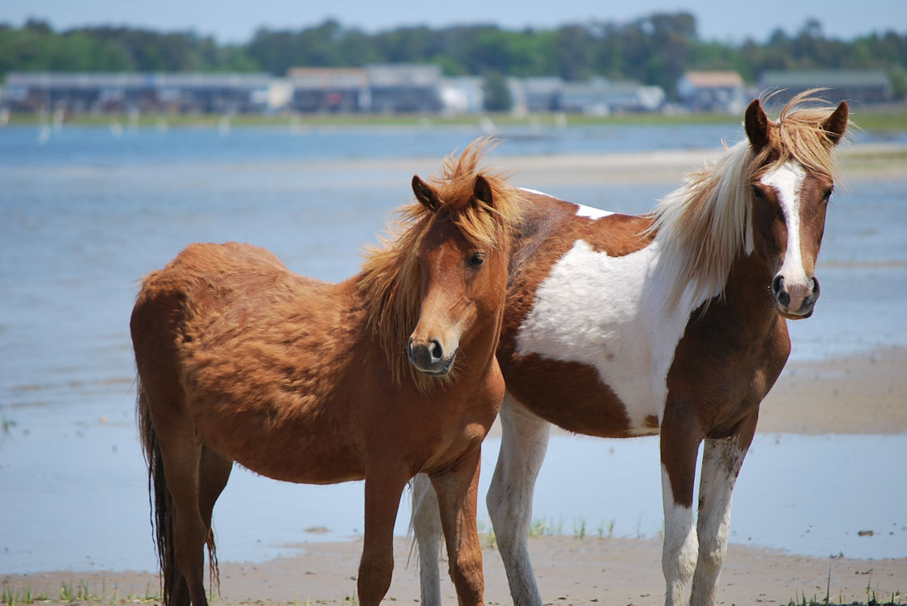
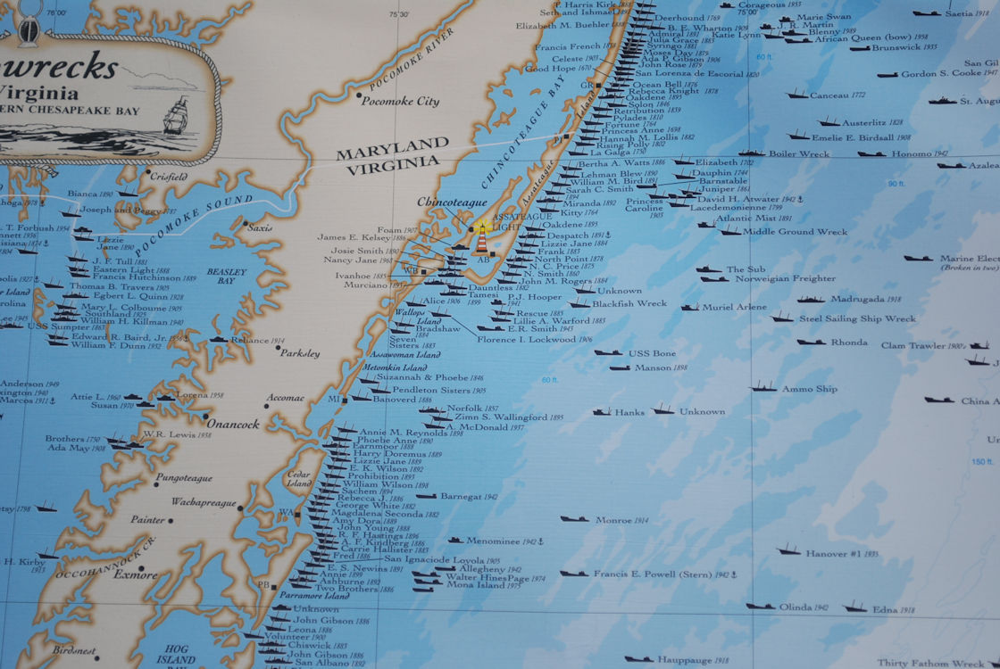
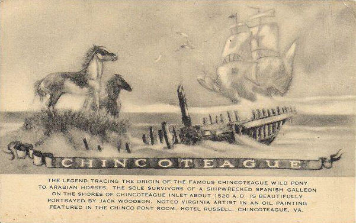
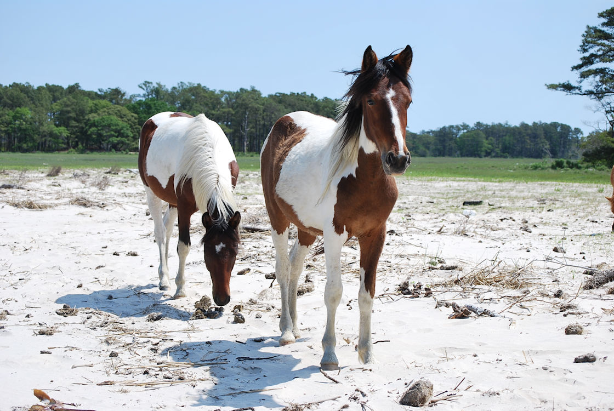

Two herds of wild horses make their home on Assateague Island, separated by a fence at the Maryland-Virginia line. The Maryland herd is managed by the National Park Service. The Virginia herd is owned by the Chincoteague Volunteer Fire Company. Each year the Chincoteague Volunteer Fire Company purchases a grazing permit from the National Fish & Wildlife Service. This permit allows the Fire Company to maintain a herd of approximately 150 adult ponies on Assateague Island. The Fire Company controls the herd size with a pony auction on the last Thursday in July. Each year tens of thousands of spectators come to watch the Saltwater Cowboys swim the pony herd from Assateague Island to Chincoteague Island. For more information about the annual Pony Swim please visit our Pony Swim Guide.
These small but sturdy, shaggy horses have adapted to their environment over the years by eating dune and marsh grasses and drinking fresh water from ponds. While they appear tame, they are wild, and Park Rangers urge visitors not to feed or pet them.
Wild ponies have inhabited Assateague Island for hundreds of years. Some have suggested that the wild ponies of Assateague trace their origin to horses released to forage on the Island by early settlers. However, the evidence strongly sugests that they are the descendants of the survivors of a Spanish galleon which wrecked off the coast of Assateague. This story, which has been passed from generation to generation on Chincoteague Island, is stronger than fiction.
If you’ve ever seen a shipwreck map of the mid Atlantic coastline, then you know that there were a remarkable number of shipwrecks. Before modern navigation, ships used lighthouses and the stars to navigate at night. This worked well until a bad storm came up or heavy fog set in, which impaired visibility. This caused ships to get off course and hit sandbars along the coast. This would usually occur during a storm and the large waves would beat the wooden ship apart. The large number of shipwrecks, together with the fact that it was very common for ships to be transporting ponies to the Colonies or South America, makes it very likely that ponies originally got to Assateague from a shipwreck.
Penning began as a way for livestock owners to claim, brand, break and harness their loose herds. By the 1700's it had become an annual event, complete with drinking, eating and plenty of revelry by the entire community. The earliest known description of Pony Penning was published in 1835. The practice was then already an "ancient" custom held in June on Assateague Island. Penning on Chincoteague Island is not mentioned until the mid-1800's, and it believed to have been begun by two islanders who owned large herds that grazed on Chincoteague.
The penning continued on both islands for years. By 1885 they were held on Assateague one day and Chincoteague the next. Assateague also had a Sheep Penning, which is believed to be a custom even older than the others. Word of the events began to spread, and hotels and boarding houses were booked for the festivities. In 1909, the last Wednesday and Thursday of July were set as the official dates for the yearly events. As Pony Penning increased in popularity, Assateague's Sheep Penning wound down and was discontinued by 1914.
After a string of disastrous fires in the Town of Chincoteague, the villagers realized their fire fighting equipment was seriously inadequate. In 1925 the town authorized the Chincoteague Volunteer Fire Company to hold a carnival during Pony Penning to raise funds. That year over 15 colts were sold to benefit the fire company, and the carnival was a huge success. Bolstered by the interest in the pony swim, visitors began arriving from across the country for the annual penning. The crowd in 1937 was estimated at 25,000. The increased revenue from the carnivals and auctions enabled the fire company to modernize its equipment and facilities, and in 1947 it began to build its own herd by purchasing ponies from local owners. They moved the herd to Assateague where the government allowed publicly owned, not private, herds to graze on the newly established Chincoteague National Wildlife Refuge.
That same year, 1947, Marguerite Henry published Misty of Chincoteague, the story that made Pony Penning internationally famous. A movie followed, as did several sequel books. The tale of the wild pony Phantom, her foal Misty and the children who buy and raise her has become a classic, still loved and enjoyed by each new generation.
Pony Penning is still held in July during the Chincoteague Volunteer Firemen's Carnival. "Salt Water Cowboys" herd the horses across the narrowest part of Assateague Channel at low tide, after which they are examined by veterinarians. After a resting period, they are herded through town to a corral at the Carnival Grounds where they stay until the next day's auction. The Pony Auction not only provides a source of revenue for the fire company, but it also serves to trim the herd's numbers. To retain the permit to graze on the refuge, the herd must not exceed 150 horses.
Each year thousands of people flock to Chincoteague Island to watch the Pony Penning and enjoy the Firemen's Carnival. For many of them, the trek to the shores of Assateague Channel on the last Wednesday and Thursday of July has become an annual event, an opportunity to participate in a tradition older than the country itself. For more information about the annual Pony Swim please visit our Pony Swim Guide.
The Chincoteague Pony became an official registered breed in 1994. The average height of a Chincoteague Pony is between 12 and 13 hands (any horse that stands less than 14 hands is considered a Pony). Chincoteague Ponies are stocky, with short legs, thick manes, and large, round bellies.
Assateague Island is a harsh environment for the Ponies and their diet is limited. The Ponies have adapted to the limited diet over the hundreds of years they have lived on Assateague. The Ponies primarily eat the salt water cord grass that grows in the marshes on Assateague Island. They eat almost all day just to get enough nutrition from this diet to sustain themselves. The salt content of the cord grass is very high. To compensate for all the salt in the cord grass they drink twice as much water as a normal horse. This is why their bellies appear so bloated.
The wild ponies on Assateague Island congregate in small groups, called "bands". Each band has one dominate stallion and the rest are mares that the stallion breeds with. The number of mares a particular stallion has in his band is dependent upon how dominate the stallion is. The stronger the stallion the more mares he is able to win when fighting other stallions on the Island. The dominate stallion will kick his male offspring out of the band after a couple of years, once the colt has reached sexual maturity. Young bachelor males tend to form their own small band, until they become big and strong enough to begin fighting for and winning mares from other stallions. Likewise, female offspring are eventually chased off by their mother to prevent inbreeding.
On average around 70 new foals are born every spring, on the Virginia side of Assateague Island. Approximately 75 percent of the mature mares have foals each year, a relatively high foaling rate for wild horses. A mare can become pregnant again once her foal has stopped nursing. And with an 11 month gestational cycle many of the mares are pregnant almost year around!
The Chincoteague Volunteer Fire Company, who owns and manages the herd, maintains the herd size at about 150 adult ponies. The Fire Company controls the size of the herd by auctioning off most of the foals at the annual Pony Auction in July. Each year just a few select foals are designated as 'buybacks'. A buyback pony is auctioned with the stipulation that it will be donated back to the Fire Company and returned to Assateague Island to replenish the herd. The winner of a buyback pony gets a certificate from the Fire Company. The buyback winner also gets to name the pony before it is returned to Assateague Island to live out its life there. Buyback ponies have actually become some of the highest priced foals sold at the auction.
